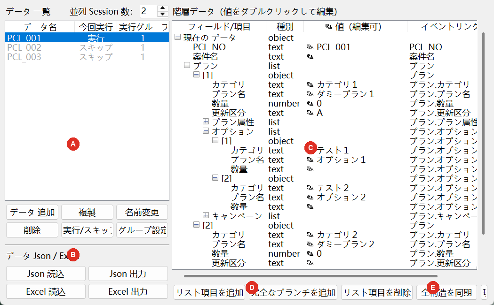

左側で実行1回分のデータを選び、右側で各項目の値を編集します。

| ボタン | 操作内容 | 注意 |
|---|---|---|
| データ追加 | 空のデータを1件作ります。 | 作成後、右側で値を入力します。 |
| 複製 | 選択中のデータをコピーします。 | 似たデータの作成に使います。 |
| 名前変更 | 選択データの表示名を変更します。 | データ内容は変わりません。 |
| 削除 | 選択データを削除します。 | 確認画面の対象名を確認します。 |
| 実行/スキップ | 今回の順番実行に含めるか切り替えます。 | スキップのデータは実行されません。 |
| グループ設定 | 実行グループ名を設定します。 | 同一グループは逐次、異なるグループは並列です。 |
| Json 読込／出力 | データの追加／バックアップを行います。 | 同名データの読込時は名前が自動変更されます。 |
| Excel 読込 | Excel から全データを完全復元します。 | 現在の全データが置き換わります。 |
| Excel 出力 | 全データを Excel に出力します。 | バックアップや一括編集に使います。 |
| 値をダブルクリック | text、number、boolean の値を編集します。 |
| リスト項目を追加 | 選択した list に空の項目を追加します。 |
| 完全なブランチを追加 | 配下項目を含む一式を list に追加します。 |
| リスト項目を削除 | 選択した [1]、[2] などのリスト項目を削除します。 |
| 全構造を同期 | 全データを現在の共通データ構造に合わせます。 |
| 現在のデータを保存 | 右側で編集中の1件を保存します。 |